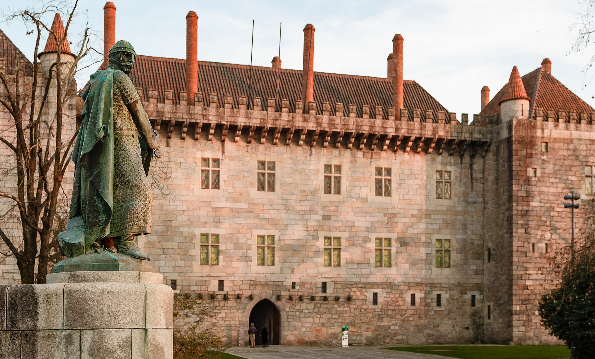

| Guimarães MHSE é uma cidade portuguesa situada no Distrito de Braga, região do Norte e sub-região do Ave (uma das sub-regiões mais industrializadas do país) e ainda à antiga província do Minho, com uma população de 54 097 habitantes, repartidos por uma malha urbana de 23,5 km², em 20 freguesias e com uma densidade populacional de 2 223,9 hab./km². É uma cidade histórica, com um papel crucial na formação de Portugal, e que conta já com mais de um milénio desde a sua formação, altura em que era designada como Vimaranes. Podendo este topónimo ter tido origem em Vímara Peres, nos meados do século IX, quando fez deste local o seu principal centro governativo do condado Portucalense que tinha conquistado para o Reino das Astúrias e onde morreu. (Texto adaptado da Wikipedia) |
 |